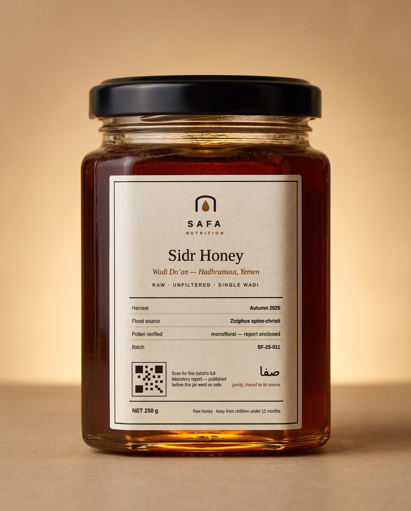

Index · № i · Wild Yemeni Sidr Honey

№ i · Signature · Harvest 2025
Wild Yemeni Sidr Honey
Raw · unfiltered · single wadi · 250 g — from the autumn flowering of the Sidr tree in Wadi Do'an, Hadhramaut. Coarse-strained only, never heated, never blended.
BATCH SF-25-011 independently verified
| Pollen origin | Ziziphus — monofloral |
| Adulteration screen (C4 + NMR) | none detected |
| Antibiotic panel | none detected |
| HMF · freshness | 4.2 mg/kg |
| Moisture | 16.8% |
The full certificate ships in the box and lives on this batch's page — scan the jar's QR.
Free EU delivery over €55 · ships same day before 15:00 CET
Origin & harvest
One valley: Wadi Do'an, Hadhramaut, Yemen. One flowering: the autumn Sidr bloom of 2025. Hives sit on the wadi ledges among the trees; the honey is coarse-strained at the apiary and never heated above hive temperature, so the pollen — our proof of origin — stays in the jar.
| Region | Wadi Do'an, Hadhramaut |
| Harvest | Autumn 2025 |
| Floral source | Ziziphus spina-christi (Sidr) |
| Processing | Raw · coarse-strained · unblended |
What the lab checked
Every batch goes to an independent, ISO 17025-accredited honey laboratory before sale: pollen analysis to confirm monofloral Sidr, C4-sugar and NMR screens against syrup adulteration, an LC-MS/MS antibiotic panel, plus HMF, diastase and moisture for freshness. If a batch fails any line, it is not bottled under this label.
How to enjoy it
By the spoon, on the sunnah of mornings; stirred into warm (not hot) water or milk; over labneh, porridge or good bread. Sidr is dark, caramel-deep with a gentle bitter finish — treat it like a single-estate olive oil: taste it plain first.
Shipping & returns
EU-wide delivery, free over €55. Orders before 15:00 CET ship the same working day from Amsterdam. Unopened jars can be returned within 30 days; if a jar arrives damaged we replace it without a form-filling ceremony.
The honest comparison
Supermarket honey, "Sidr-style", and ours.
| What you're told | Typical blend | "Sidr-style" imports | SAFA Sidr — Do'an |
|---|---|---|---|
| Origin on label | "EU / non-EU blend" | "Yemen" (unverified) | ✓ Named wadi + harvest year |
| Floral source proof | None | None | ✓ Pollen analysis, published |
| Adulteration testing | Spot checks | Rarely | ✓ C4 + NMR, every batch |
| Heat treatment | Pasteurised | Often | ✓ Raw — HMF stated per batch |
| Lab report you can read | No | No | ✓ QR on every jar |
Completes the ritual
From the same harvest.
Same honey · new form

Sidr Sticks
Twelve 10 g single-serve sticks of this exact batch.
€39 · subscribe −15% The bridge jarBlack Seed Honey
Sidr-grade honey infused with cold-pressed nigella.
€29 · launching wave 2 Try all threeThe Tasting Flight
Three 40 g minis — Do'an, Black Seed, Reserve — gift-boxed.
€35 · the gifting door The daily kitThe Morning Ritual
14 days of sidr sticks, collagen sachets and black-seed softgels.
€59 · starter kit